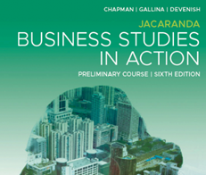
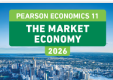
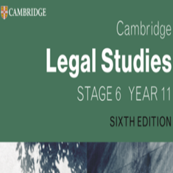
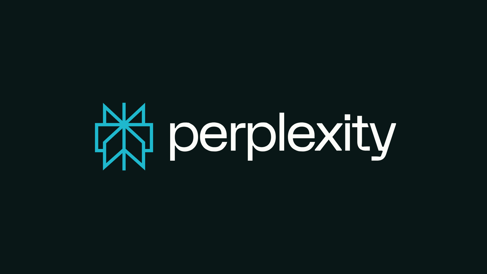
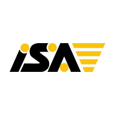
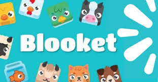
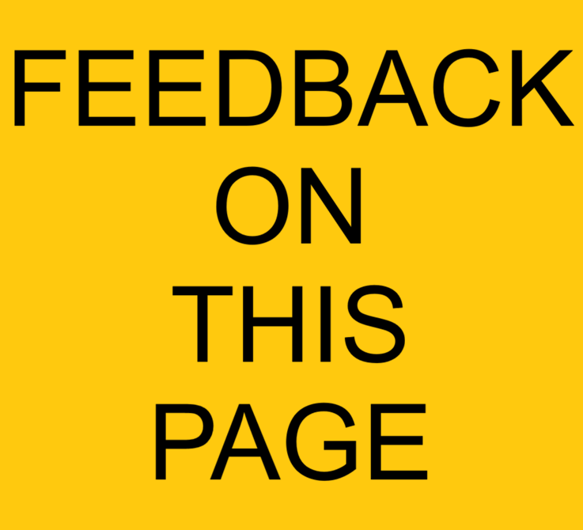

jt portal
......... apologies for the inconvenience, the famous jtportal news ticker is unvailable as of this time. fixes should be on the way. jt portal 🔥🔥🔥







made by Max Watson as a joke.
all "news" headlines are fake and do not intend to damage the reputation of mentioned persons.